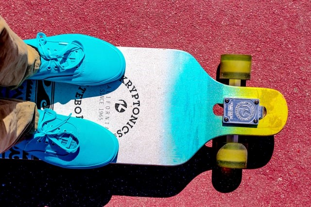
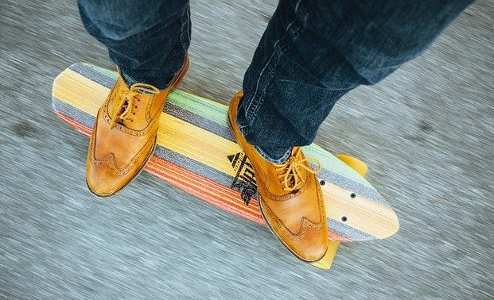
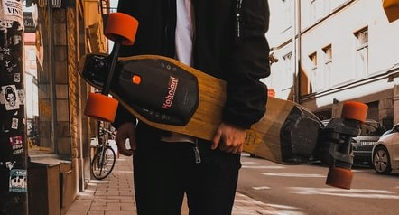

Commuter
This board design has the trucks screwed through a hole in the top. This gives the board better stability when turning and at high speeds. Commuter boards also typically have the middle section of the board lowered slightly than the ends. This offers further stability at high speeds as the center of gravity is lower to the ground.
Mini Cruiser
If you're looking for something smaller that can also be stable at high speeds then be sure to check out the mini cruiser. Here you get a fixture of longboard and skateboard. These boards are smaller than the traditional longboard which will make it easier to turn, but less stable at high speeds.
Electric
If you love the feeling on the board but don't want to keep up with pushing try an electric board. These boards have a motor attached to the back wheels, using a controler you can accelerate in either direction. These are fantastic in large city settings for easy commuting.
